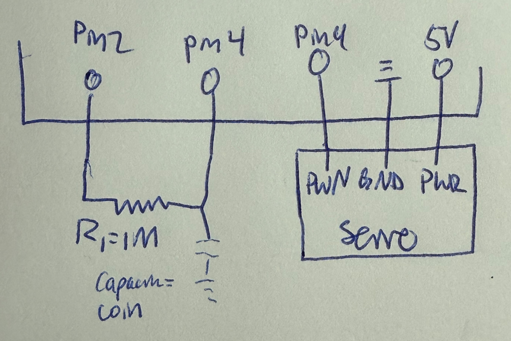
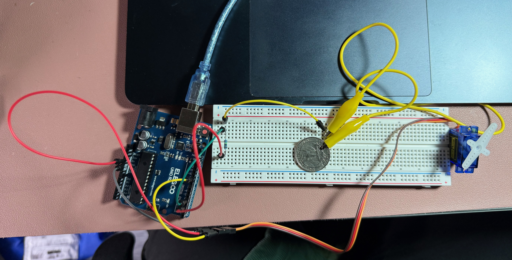
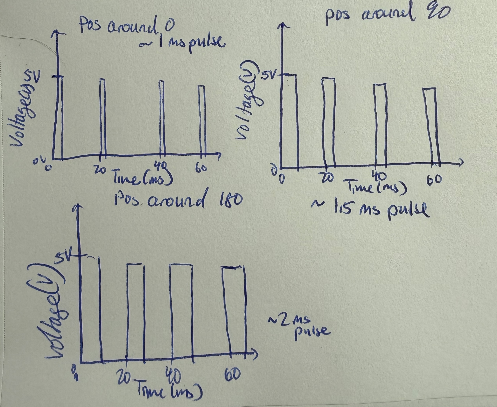

Image of Schematic

The schematic is composed of a capacitor with a resistor and a servo motor. The capacitor has a resistor of 1M so the current was low enough to detect a direct touch only. This was also the resistor intially used in class to detect touch.
Image of Circuit

A 1M was used as the provided kit had the correct amount. A quarter was used as the capacitor.
Gif of Circuit

Answers to Questions
- These graphs represent the pulses at different moments, the pulses get slightly longer as the position gets closer to 180.

- Needs to have remove the outliers - can be done via a median filter or a range limit but the psuedocode is for the median filter where it takes a the median from a window of readings (code taken mostly from class):
int readings[WINDOW];
void loop() {
readings[index] = analogRead(inputPin);
sorted = sort(readings);
filtered_val = sorted[WINDOW/2];
}
- Needs to smooth the data/take the average. Takes in some number of readings, gets the total from inputs than averages it out (code mostly taken from the smoothing example code from arduino):
int readings[numReadings];
int readIndex = 0;
int total = 0;
int average = 0;
total = total - readings[readIndex];
readings[readIndex] = analogRead(inputPin);
total = total + readings[readIndex];
readIndex = readIndex + 1;
if (readIndex >= numReadings) {
readIndex = 0;
}
average = total / numReadings;
Serial.println(average); - No AI was used in completing this assignment.
Code
Explanation for values chosen if: with the capacitor sensor (coin) touches were detected to be values of 100 and above so the if statement checks if the value of the sensor is >= 100.
// include the servo library
#include < Servo.h >
// include the capacitor sensor library
#include < CapacitiveSensor.h >
// create Servo object to control the servo
Servo myservo;
// variable to store the servo position, subject to change
int pos = 0;
// create capcitive sensor with pins 2 (to send) and 4 (to receive)
CapacitiveSensor cs_s2_r4 = CapacitiveSensor(2,4);
// code to run once the arduino is connected
void setup() {
//puts pin 9 to servo
myservo.attach(9);
// turns off autocalibration
cs_s2_r4.set_CS_AutocaL_Millis(0xFFFFFFFF);
// Begin Serial communication to print values
Serial.begin(9600);
}
//code to run continuously after arduino is set up
void loop() {
// The start time of the reading in miliseconds
long start = millis();
// variable that gets the capacitive sensor value with 30 samples
long total1 = cs_s2_r4.capacitiveSensor(30);
//Prints beginning of the sensor value statement
Serial.print("\t Sensor Value: ");
// print sensor output value
Serial.println(total1);
// if the sensor is touched (where the value is over 100)
if (total1 >= 100) {
//check if sensor is still being touched, i.e still in the moved position of 180 degrees
if (pos < 180){
// for loop for servo's position to go from 0 deg to 180 deg in 1 deg steps
for (pos = 0; pos <= 180; pos += 1) {
// servo moves to the position (degree) in pos variable
myservo.write(pos);
// waits 5 ms for the servo to reach the position
delay(5);
}
}
//default / not being touched
} else {
//sets position variable back to 0
pos = 0;
//sets servo motor back to 0 degree position
myservo.write(pos);
// waits 5 ms for the servo to reach the position
delay(5);
}
}